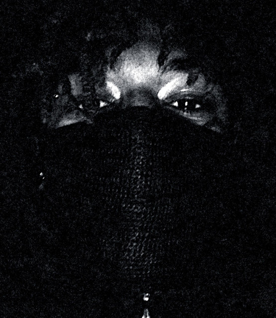

Marius Lucas Antonio Listhrop ( Scarlxrd )
British rapper, singer and songwriter. Known for his unique musical style combining elements of trap music and heavy metal.
Career
2012–2014: YouTube beginnings
Before he started a career in music, Listhrop began uploading videos on YouTube as Mazzi Maz. His personality on the site was described as a "perky" and "super-smiley YouTuber" who recorded and published vlogs in his bedroom. He often collaborated with friends and fellow YouTube personalities Sam Pepper and Caspar Lee. From late-2013 to mid-2014, Listhrop and Pepper embarked on a worldwide comedy-music tour, "WDGAF Tour". By February 2017, Listhrop removed all of his Mazzi Maz videos from his YouTube channel and has since rebranded it to his Scarlxrd moniker. In a 2018 Interview, Listhrop described his time as a YouTube personality and posting videos on the site as "soul-destroying".
2014–2016: Myth City
In 2014, Listhrop founded the nu metal/rap rock band Myth City, in which he performed as the vocalist. Listhrop also described the band's sound as a fusion of rap music and grindcore.[6] The band's YouTube channel quickly gained a following mainly consisting of Mazzi Maz fans, who gave the group a mixed reception; fans responded positively to Listhrop's screamed vocals, but were confused on the contrast between the band's harsh musical style and Listhrop's "smiley" YouTube videos. Myth City released their self-titled debut EP on 28 February 2015.
2016–2018: Early albums and breakthrough
In August 2016, Scarlxrd debuted his new moniker with the release of "Girlfriend". The music video depicts him unmasked and rapping over a "humid, tropical hip-hop track". By the end of 2016, he released two albums, his self-titled album (stylised in Japanese characters as スカー藩主) and Rxse. After the release of two more albums, Cabin Fever and Chaxsthexry, in April 2017, Scarlxrd released the video for "Chain$aw" on 31 May; a week later, he released the music video for "King, Scar". On 23 June, he published the music video for "Heart Attack" and the video quickly gained popularity; he credits his consistency of releasing music videos, specifically the videos for "Chain$aw" and "King, Scar", for the video's popularity rise.[12] On 29 September, he released his fifth studio album Lxrdszn. “King, Scar” was also released as a music kit in Counter-Strike: Global Offensive.
In February 2018, it was announced that Scarlxrd would perform at the 2018 Reading and Leeds Festivals. In April, it was revealed that he would be featured on Carnage's second studio album, Battered Bruised & Bloody, released on 13 April; Scarlxrd performed on the song "Up Nxw". On 4 May, he released his sixth studio album and major label debut Dxxm via Island Records
2019–present: Continued major label releases
After releasing singles from mid-2018 to early-2019 in anticipation of an upcoming album, including "Hxw They Judge", "Berzerk", "Sx Sad", and "Head Gxne", Scarlxrd announced his seventh studio album, Infinity, which was released on 15 March 2019. He was a nominee in the 2019 Kerrang! Awards for Best British Breakthrough.[18][19] Later that year, "The Purge" was featured on the first season of the HBO television series Euphoria. Scarlxrd released his second album of 2019 titled Immxrtalisatixn on 4 October. He released his third 2019 studio album on 13 December, titled Acquired Taste Vxl 1. On 19 December, "I Can Dx What I Want" was announced as the official theme song for the WWE NXT UK event, NXT UK TakeOver: Blackpool II.
Discography
| Title | Album details |
| スカー藩主 |
|
| Rxse |
|
| Cabin Fever |
|
| Chaxsthexry |
|
| Lxrdszn |
|
| Dxxm |
|
| Infinity |
|
| Immxrtalisatixn |
|
| Acquired Taste Vxl 1 |
|
| Scarhxurs |
|
| Fantasy Vxid |
|
His spotify account with all songs -
used sources: wikipedia / spotify